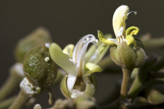
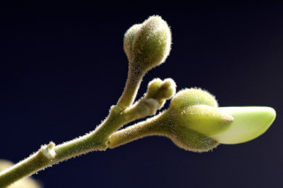
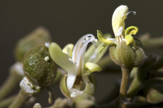
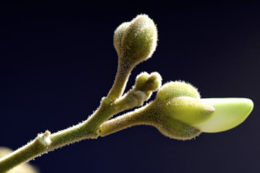

Large shrubs or small trees up to 8 m tall.
ದೊಡ್ಡ ಗಾತ್ರದ ಪೊದೆಗಳು ಅಥವಾ 8 ಮೀ. ಎತ್ತರದ ಸಣ್ಣ ಮರಗಳು.
Large shrubs or small trees up to 8 m tall.
பெரிய குத்துச்செடி அல்லது சிறிய மரம், 8 மீ. உயரம் வரை வளரக்கூடியது.
Bark grey, smooth; blaze orange.
ತೊಗಟೆ ಬೂದು ಬಣ್ಣದಲ್ಲಿದ್ದು ನಯವಾಗಿರುತ್ತದೆ;ಕಚ್ಚು ಮಾಡಿದ ಜಾಗ ಕಿತ್ತಳೆ ಬಣ್ಣ.
Bark grey, smooth; blaze orange.
மரத்தின் பட்டை சாம்பல் நிறமானது, வழுவழுப்பானது; உள்பட்டை ஆரஞ்ச் நிறமானது.
Branchlets greenish, terete, glabrous.
ಕಿರುಕೊಂಬೆಗಳು ಹಸಿರಾಗಿದ್ದು ದುಂಡಾಗಿರುತ್ತವೆ.
Branchlets greenish, terete, glabrous.
சிறிய நுனிக்கிளைகள் பச்சை நிறமானது, குறுக்குவெட்டுத் தோற்றத்தில் வளையமானது, உரோமங்களற்றது.
Leaves simple, alternate, distichous; petiole 0.4-0.7 cm long, canaliculate, glabrous; lamina 5.5-15 X 2- 5.5 cm, narrow elliptic to elliptic-oblong or oblong-lanceolate, apex acuminate with blunt tip, base acute or slightly attenuate, margin entire or slightly undulate; chartaceous or subcoriaceous, glabrous; midrib slightly raised above; secondary_nerves 5-9 pairs, gradually curved; tertiary_nerves horizontally reticulo-percurrent.
ಎಲೆಗಳು ಸರಳವಾಗಿದ್ದು, ಪರ್ಯಾಯ ಜೋಡನಾ ವ್ಯವಸ್ಥೆಯಲ್ಲಿದ್ದು ಕಾಂಡದ ಎರಡೂ ಕಡೆ ಎದುರು ಬದರಿನ ಲಂಬ ಸಾಲಿನಲ್ಲಿರುತ್ತವೆ ;ತೊಟ್ಟುಗಳು 0.4 – 0.7 ಸೆಂ.ಮೀ. ಉದ್ದವಿದ್ದು ಕಾಲುವೆಗೆರೆ ಸಮೇತವಿದ್ದು ರೋಮರಹಿತವಾಗಿರುತ್ತವೆ;ಪತ್ರಗಳು 5.5 – 15 X 2 – 5.5 ಸೆಂ.ಮೀ. ಗಾತ್ರ ಹೊಂದಿದ್ದು ಸಂಕುಚಿತ ಅಂಡವೃತ್ತದಿಂದ ಅಂಡವೃತ್ತ-ಚತುರಸ್ರ ಅಥವಾ ಚತುರಸ್ರ-ಭರ್ಜಿಯವರೆಗಿನ ಆಕಾರ ಹೊಂದಿದ್ದು, ಮೊಂಡಾಗ್ರವುಳ್ಳ ಕ್ರಮೇಣ ಚೂಪಾಗುವ ತುದಿ, ಚೂಪಾದ ಅಥವಾ ಸ್ವಲ್ಪ ಮಟ್ಟಿಗೆ ಒಳಬಾಗಿದಬುಡ, ನಯವಾದ ಅಥವಾ ಸ್ವಲ್ಪಮಟ್ಟಿಗೆ ತರಂಗಿತವಾದ ಅಂಚು,ಕಾಗದವನ್ನೋಲುವ ಅಥವಾ ಉಪ ತೊಗಲ್ಲನ್ನೋಲುವ ಮೇಲ್ಮೈ ಹೊಂದಿದ್ದು ರೋಮರಹಿತವಾಗಿರುತ್ತವೆ;ಮಧ್ಯನಾಳ ಮೇಲ್ಭಾಗದಲ್ಲಿ ಕೊಂಚ ಮೇಲೆದ್ದಿರುತ್ತದೆ;ಎರಡನೇ ದರ್ಜೆಯ ನಾಳಗಳು 5 ರಿಂದ 9 ಜೋಡಿಗಳಿದ್ದು,ಕ್ರಮೇಣವಾಗಿ ಬಾಗಿರುತ್ತವೆ;ಮೂರನೇ ದರ್ಜೆಯ ನಾಳಗಳು ಲಂಬರೇಖೆಗೆ ಸಮಕೋನದಲ್ಲಿದ್ದು,ಜಾಲಬಂಧ ನಾಳ ವಿನ್ಯಾಸದಲ್ಲಿದ್ದು ಎಲೆಯ ದಿಂಡಿಗೆ ಅಡ್ಡವಾಗಿ ಕೂಡುತ್ತವೆ.
Leaves simple, alternate, distichous; petiole 0.4-0.7 cm long, canaliculate, glabrous; lamina 5.5-15 X 2- 5.5 cm, narrow elliptic to elliptic-oblong or oblong-lanceolate, apex acuminate with blunt tip, base acute or slightly attenuate, margin entire or slightly undulate; chartaceous or subcoriaceous, glabrous; midrib slightly raised above; secondary_nerves 5-9 pairs, gradually curved; tertiary_nerves horizontally reticulo-percurrent.
இலைகள் தனித்தவை, மாற்றுஅடுக்கமானவை, இருநெடுக்கு வரிசையிலையடுக்கம் (டைஸ்டிக்கஸ்); இலைக்காம்பு 0.4-0.7 செ.மீ. நீளமானது, குறுக்குவெட்டுத் தோற்றத்தில் கேனாலிகுலேட், உரோமங்களற்றது; இலை அலகு 5.5-15 ´2-5.5 செ.மீ., குறுகிய நீள்வட்ட வடிவானது முதல் நீள்வட்டம்-நீள்சதுர வடிவானது அல்லது நீள்சதுர-ஈட்டி வடிவானது, அலகின் நுனி சிறிது அதிக்கூரியதுடன் அதன் முனை மழுங்கியது, அலகின் தளம் கூரியது அல்லது சிறிது அட்டனுவேட், அலகின் விளிம்பு முழுமையானது அல்லது சிறிது அலை போன்றது; சார்ட்டோசியஸ் அல்லது சப்கோரியேசியஸ், உரோமங்களற்றது; மையநரம்பு மேற்புறத்தில் அலகின் பரப்பைவிட சிறிது உயர்ந்து இருக்கும்; இரண்டாம் நிலை நரம்புகள் 5-9 ஜோடிகள், சீராக வளைந்தவை; மூன்றாம் நிலை நரம்புகள் விளிம்பு நோக்கிய இணையான வலைப்பின்னல்-பெர்க்கரண்ட் போன்றவை.
Inflorescence terminal or axillary panicles, tomentose; flowers white-yellowish; pedicel up to 0.5 cm long.
ಪುಷ್ಪಮಂಜರಿ ತುದಿಯಲ್ಲಿನ ಅಥವಾ ಅಕ್ಷಾಕಂಕುಳಿನಲ್ಲಿನ ಪುನರಾವೃತ್ತಿಯಾಗಿ ಕವಲೊಡೆಯುವ ಮಾದರಿಯವುಗಳಾಗಿದ್ದು ದಟ್ಟ ಮೃದು ತುಪ್ಪಳದಿಂದ ಕೂಡಿರುತ್ತವೆ;ಹೂಗಳು ಬಿಳಿ – ಹಳದಿ ಛಾಯೆಯ ಬಣ್ಣದಲ್ಲಿರುತ್ತವೆ; ತೊಟ್ಟುಗಳು 0.5 ಸೆಂ.ಮೀ.ವರೆಗಿನ ಉದ್ದವಿರುತ್ತವೆ.
Inflorescence terminal or axillary panicles, tomentose; flowers white-yellowish; pedicel up to 0.5 cm long.
மஞ்சரி தண்டின் நுனியில் அல்லது இலைக்கோணங்களில் காணப்படுபவை பேனிக்கிள் வகை மஞ்சரி, உரோமங்களுடையது; மலர்கள் வெள்ளை-மஞ்சள் நிறமானது; மலர்காம்பு 0.5 செ.மீ. நீளமானது.
Drupes, 1-celled, globose, rugose, dark green, 2.2 cm across; seed one.
ಡ್ರೂಪ್ಗಳು 1 ಕೋಶವನ್ನೊಳಗೊಂಡಿರುತ್ತವೆ,ಗೋಳಾಕಾರದಲ್ಲಿದ್ದು, ಸುಕ್ಕು ಸುಕ್ಕಾದ ಮೇಲ್ಮೈ ಹೊಂದಿದ್ದು, ಕಡುಹಸಿರು ಬಣ್ಣದಲ್ಲಿರುತ್ತವೆ;ಬೀಜಗಳ ಸಂಖ್ಯೆ1.
Drupes, 1-celled, globose, rugose, dark green, 2.2 cm across; seed one.
உள்ளோட்டுத்தசைகனி (ட்ரூப்), 1-அறைகளுடையது, கோள வடிவமானது, சுருக்கங்களுடையவை (ருக்கோஸ்), கரும்பச்சை நிறமானது, 2.2 செ.மீ. குறுக்களவுடையது; ஒர் விதையுடையது.

 


